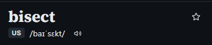
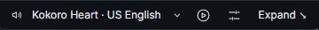

Download the installer
Get DIO-setup.exe for Windows.
Select a word, press Ctrl + Alt + D, and read its meaning beside your work. DIO includes 152,000 English words offline.
An instance of colliding.
Select a word, press the shortcut, and read its definition beside your work.
The collisions were difficult to predict.
An instance of colliding.
Noun1. An instance of colliding.
Noun1. An error caused by two source code elements (such as variables or functions) having the same name as each other.
Source: Entry source · CC BY-SA 3.0
Highlight a word in the app you are reading.
Press Ctrl + Alt + D for a definition and pronunciation. Save the word with the star.
Read more meanings and examples when available. DIO also includes an offline dictionary and acronym list.
Browsers, PDF readers, terminals and game stores. The popup opens beside the word and closes when you click away.
Double-click a word in an article. DIO tries Windows accessibility first, then copies and restores the clipboard if needed.
Look up words in Adobe Acrobat and other PDF readers. A comma or quote mark picked up with the word is left out.
Look up jargon in Windows Terminal. DIO copies with Ctrl + Insert, so the running program is never interrupted.
Read a store page in Steam and check a word without leaving it. Your previous clipboard comes back after every lookup.
DIO speaks with Kokoro, an open voice model. Install it once from Settings, about 95 MB, and it works offline.
Click the speaker beside its pronunciation. DIO uses an available recording or the installed Kokoro voice.
Select up to 2,000 characters and press Ctrl + Alt + R. Press it again to stop.
Once installed, Kokoro makes speech on your CPU. The text you read aloud stays on your computer.

Ctrl + Alt + R
Run the Windows installer, then look up a word from the system tray app.
Get DIO-setup.exe for Windows.
Open the downloaded file and follow the installer prompts.
Highlight a word and press Ctrl + Alt + D. Press Escape or click away to close it.
DIO is not code-signed yet. If Windows SmartScreen warns you, choose More info, then Run anyway.
Yes. 152,000 English words and the acronym list are built in. Online sources add simpler definitions when you are connected.
Only the word you look up, to Simple English Wiktionary and the Free Dictionary API. Text read aloud never leaves your computer.
Apps running as administrator, games, remote desktop windows and the classic console can block it.
Open Settings, then Apps, then Installed apps, and uninstall DIO.